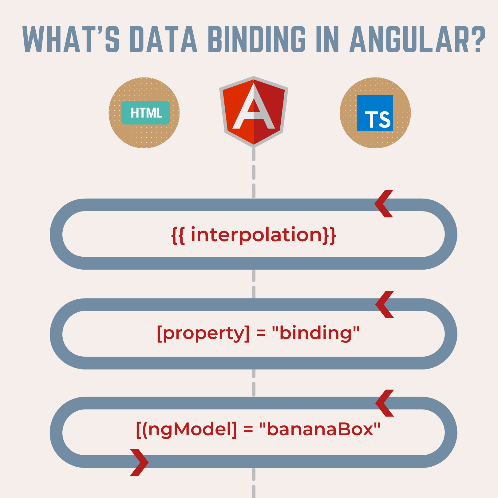
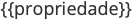

<main class="pageinter">
  <section class="container">
    <div class="row">
      <div class="col-lg-6">
        <div class="titpage">
          <h1>O que é Data Binding</h1>
        </div>
        <p>Data Binding basicamente é uma técnica para que os valores das variaveis do componente sejam refletidas na
          página, ou seja, se o componente tem uma variável <u>nome</u> a ideia seria que através do data binding a
          gente consiga exibir esse nome sem manipulações direta no DOM.</p>

        <p>Basicamente são as 4 formas de como a View interage com Model/(Compoment).</p>
      </div>
      <div class="col-lg-6"></div>
    </div>
    <section>
      <div class="container">
        <div class="row">
          <div class="col-lg-12">
            <h2>Interpolation</h2>
            <p>Interpolation ou interpolação em português é o tipo mais comum de binding, ele é utilizado para
              transportar o valor de propriedades e retorno de métodos do componente para o template HTML.</p>
            <p>Na interplação utilizadmos o nome da propriedade ou método dentro de duas chaves, em inglês curly
              brackets</p>
            <p><code class="html plain">&lt;h1&gt;&lt;/h1/&gt;</code></p>
          </div>
          <div class="col-lg-12">
            <h2>Attribute binding</h2>
            <p>Com attribute binding podemos setar o valor de qualquer atributo de um elemento html.</p>
            <p>Pode ser usado da seguinte forma:</p>
            <p><code class="html plain">&lt;input type="text" value=""/&gt;</code></p>
            <p>Podemos também utilizar os colchetes para envolver o atributo do elemento html, desta forma o template
              irá receber o valor da propridade do componente diretamente no atributo sem a necessidade de utilizar a
              interpolação, exemplo:</p>
            <p><code class="html plain">&lt;input type="text" [value]="propriedade"/&gt;</code></p>
          </div>
          <div class="col-lg-12">
            <h2>Event binding</h2>
            <p>Neste tipo de binding enviamos valores vindos do template HTML para o componente, este tipo de binding é
              importantíssimo por ser utilizado para manipular os eventos e interações com o template e enviados para o
              componente.</p>
            <p>E como o próprio nome diz, event binding, utilizamos de eventos para que possamos disparar os métodos ou
              expressões para atualizarmos a model a partir de um elemento Html presente no template.</p>
            <p>Por exemplo, em um input field, podemos disparar um evento enquanto o campo está sendo preenchido:</p>
            <p><code class="html plain">&lt;input (input)="model.skype=$event.target.value" type="text"
                class="form-control"/&gt;</code></p>
            <p>Em angular definimos o event binding utilizando os parenteses "(nomeevento)",
              ex.:para o evento "OnChange" utilizamos (change), para o "OnClick" temos (click) no caso (input)
              representa um evento que é capturado quando uma tecla é pressionada. desta forma podemos definir uma
              expressão para setar a model</p>
              <p><code class="html plain">ex.:(input)="model.skype=$event.target.value"</code></p>
              <p>ou podemos também chamar um método</p>
              <p><code class="html plain">ex.:(input)="metodoHandler($event)"</code></p>
              <p>e também transferir o valor do template para o componente através do objeto $event</p>
          </div>
          <div class="col-lg-12">
            <h2>Two way binding</h2>
            <p>Diferente do angular Js, o binding de duas vias em angular algumas otimizações de perfomance foram implementadas, e por este motivo não existe mais este tipo de binding e sim uma combinação do attribute binding e event binding quando precisamos atualizar o template e o componente existe a diretiva ngModel, utilizada nos elemetos de um formulário que simplifica o modo de fazermos o binding de duas vias.</p>
            <p>Neste tipo de binding, como explicado, anteriormente temos a união dos dois tipos de binding em uma sintaxe conhecida como "banana in the box" ou [(ngModel)], como podemos ver esta sintaxe realmente lembra duas bananas, representando os parenteses "()", e a caixa, representando os colchetes "[]", uma forma simples de lembrar a sintaxe é imaginar esta figura abaixo:</p>
            


          </div>
        </div>
      </div>
    </section>
  </section>
</main>
